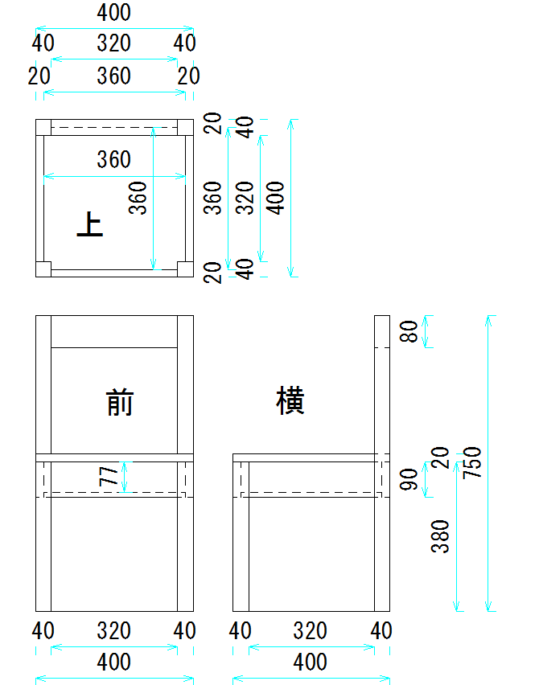

ISUプロジェクト
制作：芭奈
椅子プロジェクト

クリックで画像を拡大
制作者からの説明&一言！
CADを使用して椅子を設計し，実際に作ってみました．
設計する際にはDe-Cad，Jw_cadを使用しました．
椅子の座面には収納スペースをつけ，中に物を収納できるようにしました．
今回収納するのはこちら！ちょっと加工した体重計！
座ってみると何かが起こるかもしれませんね．怖がらずに積極的に座って楽しんでいただけるとありがたいです．
今回初の電子工作にあたり，たくさんの先輩方や同級生にご指導，ご協力いただきました！本当にありがとうございました！
以下にご協力いただいた方々をお名前だけですが紹介させていただきます．
・技術指導 しゃこさん
extさん
そーてっくさん
sikiさん
・お手伝い nanoさん
アミシーさん
すいかさん
・言いだしっぺなのに一番足を引っ張った人 芭奈
・すぺしゃるさんくす OUCRC部員の皆様
芭奈父
2013年岡山大学祭企画TOPに戻る
OUCRC TOPに戻る